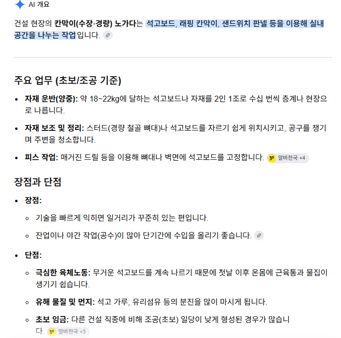
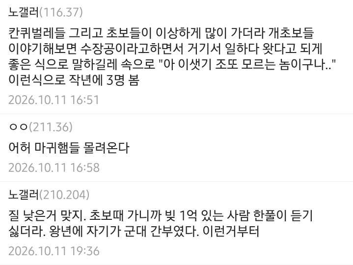

일당도 주급으로 지급하는 곳이 많고
일이 많아서 돈 벌기는 좋다고 함



대충 개드립올라오는 야가다글 보면
아파트현장같은덴 목수가 갑이다, 대기업 다이렉트로 뚫린 팀 들어가라(중간에 똥때기 두세번 거치는덴 걸러라), 곰빵, 칸막이, 철거, 철근 걸러라 이렇게배웟음 ㅇㅇ
쿠팡이나 다니면서 adhd 치료하면서 전기산업기사를 딸까?
기사따고 현장 내선공이나 , 시설관리 ??
그러고 싶네
내선공은 기능사만 있어도 뽑을껄
쿠팡갈바엔 집앞 노가다를가래!
지금 가면 데마만 맞을걸
나 차도없음
비단 수장 뿐만 아니라, 조적 미장 방수 석공(바닥 테라조) 전기 소방 통신 어느 공종 이나 꼴통은 있기 마련. 수장이 거의 마감단계라 예민한게 맞긴함.
조적공들 장당 인건비 받으니 오줌 똥 사모레에 싸고 섞는거봤는데 진짜 사람새끼들 아니더라
보통 회베로 계약하고 들어오는데다, 그걸 또 실행짜서 주니 그럴수 밖에.. 외벽 조적할때, 시스템 비계 서포트 맨날 해체해놓고 원상복구도 안해서 나중에 비계 뜯을때 비계공들 극대노해서 대판싸움 (비계 발판에 몰탈 엉겨있고, 지들이 임의 해체한 비계파이프 죄다 땅에 던져놔서)
노가다에서도 급을나누는구나...
그정도로 막장인듯
그동안 쌓은 이미지가 있고 옛날에 비해 바뀐게 뭐 있나? 크게 없으니 똑같이 보일 수 밖에 ..
ㅇㅇ 그 이미지에서 벗어났음? 너 밖에 나가서 저 노가다 해요 하면 아~ 건실한 직업 가지셨구나 하고 봐줌?
진입장벽이 낮은 직업일수록 씹창이미지 다는건 기본 패시브임. 온갖 인간들이 하기 쉬운 직업이니까
쉽게 생각해서 남이 니 자식보고 "너 공부 열심히 안하면 노가다한다" 소리 듣고 기분이 어떨지 생각하면 될듯?
죄송한데 대학생때 GS건설 안전부서 하청에서 일해보고 샌드위치판넬 판매도 해봐서 내가 니보다 그 쪽 방면은 잘 알거 같은데?
지금 말하고 있는건 노가다 라는 단어를 얘기하고 있는데 대기업 건설사가 왜 쳐나와 ㅋㅋ 그럼 그 사람이 저 --건설사 다닙니다 라고 얘기하지 노가다합니다 라고 하겠냐?
핀트 못맞추는거 보니 애지간히 멍청하구나
그 좁은 우물에서만 사니까 바깥사람들은 어떤 이미지로 보는지 전혀 모르나보네 당장 문 밖에 나가서 저 노가다해요 하고 다녀보라니까 ㅋㅋ
어떤 병신이 대기업 건설사 다닌다고 하는 사람을 노가다 하는 사람으로 보냐니까? 글 내용도 시발 소속도 없는 그냥 쌩 노가다 말하는건데 븅신이 꾸득꾸득 핀트 못잡네
심연중에 심연이구나
시발 거기 옆에서 야가다하는 새키가 급나누기는..
경량이 요즘사람들은 안그런데 엣날은 말밥주는 애들많긴햇음
저건 그냥 저런새끼들만 모인거지.......저기 나열된 인생망한 새끼들은 직렬불문하고 흔하디 흔한거임.
인생 창난 인간들이 많이 흘러들어오는곳이 노가대판이고 그런인간들만 모여서 교집합을 이룬다고해도 이상할거없지.
정말 열심히 사는 삼촌들도 많아.
평일에 조명가게나가서 조명인테리어하고 주말에는 인력소 전기나 아시바쪽 가시고 그마저도 일없으면 잡부로 나가는 형님도있음. 자식이 셋이라 열심히 일하시더라
삼성에서 일해본 적 있는데
군기잡더라ㅋㅋ
가뜩이나 사람 없는데
직업의 귀천은 해당 직업 종사자가 직접 만드는 것
반도체 현장 겨울방학 때 세달씩 했는데 다들 뭐라도 하시려고 오신분들이라 배울점많고 열심히 일하셨음. 애초에 진짜앰생들은 결근 많이해서 짤리거나 팀장님이 안받더라
저게 위에 댓글들에서 얘기하는것도 얘기하는거지만
이 글이 나름 일리가 있는게 유독 칸막이는 단가가 개씹창임
전기 덕트 배관 초보 15 ~16.5 받을때
칸막이는 씨팔 13-14임 얘네들이 유독 짬
가족 중에 막노동 하시는 분 있는데 다 저렇게 살진 않음. 근데 대부분이 그렇게 살긴 함.
칸마귀 칸퀴벌레 ㅋㅋ 그와중에 급을 나누네. 교도소에서 아동성범죄자 같은건가
칸마귀 아무나 들어올 수 있어서 그럼 ㅋㅋ

아 내가 경량철골 천장한다
고덕 칸막이 가려했는데 어디로 가야하오